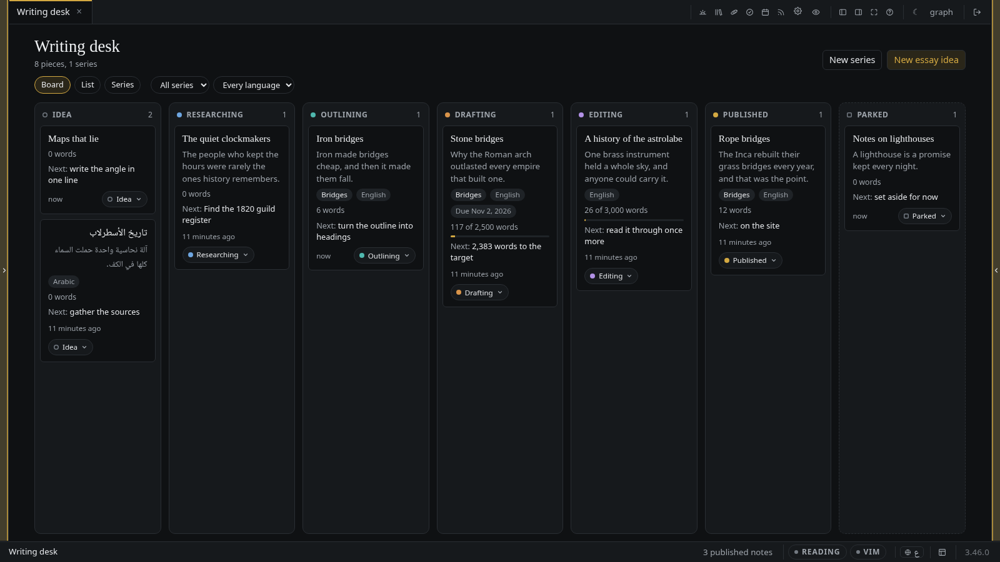
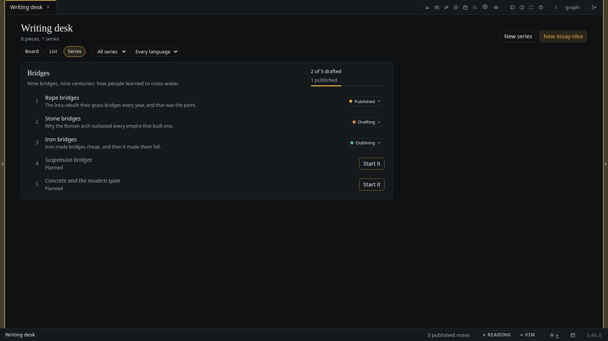
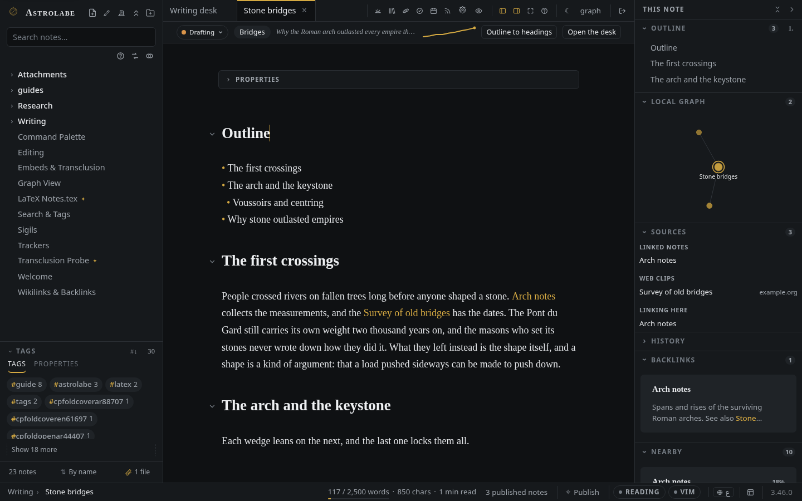

The Writing desk
Every piece you mean to write, from a passing idea to a published post: a board by status, a list, your series as lanes with their progress, and on each piece its status, its angle, its sources and how it has grown.
Ideas for essays tend to live in three places at once: a line in a daily note, a heading in a file called Someday, and the back of your head. The desk puts them in one place without asking you to move them anywhere new. A piece is still an ordinary note; the desk only reads what its frontmatter says and draws it.
Open it from the desk button at the top of the sidebar, by typing Open the Writing desk in
the command palette, or at /desk. On a phone it is a row under More. It opens as a tab, like
the Calendar and the Timeline.

A piece is a note
Say you want to write about stone bridges. The note is Writing/Stone bridges.md, and the top of it
reads:
---
kind: essay
status: drafting
angle: "Why the Roman arch outlasted every empire that built one."
series: "[[Bridges]]"
lang: en
goal: 2500
due: 2026-11-02
---
| Key | What it says | Needed? |
|---|---|---|
kind: essay | This note is a piece of writing. piece and post mean the same | yes |
status | Where it stands: idea, researching, outlining, drafting, editing, published, or parked for set aside. A note with no status is an idea | no |
angle | One line: what the piece argues. It is the line that stops an idea being only a topic | no |
series | The series it belongs to, as a link to the series note | no |
lang | en or ar. Left out, the desk reads the language off the text | no |
priority | high, medium or low; it orders the cards in a column | no |
due | A date, YYYY-MM-DD. A card past its date says so | no |
goal | A word target, the same goal: the status bar already counts against (see the editor) | no |
next | The next step in your own words. Left out, the desk suggests one for the status | no |
Only kind: is required. A title and an angle are a whole piece as far as the desk is concerned,
and everything else can come later.
A series
A series is a note too, with kind: series, a description:, and its pieces in order under
series::
---
kind: series
description: "Nine bridges, nine centuries: how people learned to cross water."
series:
- "[[Rope bridges]]"
- "[[Stone bridges]]"
- "[[Iron bridges]]"
- "[[Suspension bridges]]"
---
An entry that names a note that does not exist yet is a planned slot: the series knows the piece is coming before there is a file for it. The desk shows it greyed with Start it, which makes the note beside the series, already in it.
A piece can also join a series from its own side, with series: "[[Bridges]]" in its frontmatter;
the desk lists it after the pieces the series note names. The order you care about goes in the
series note.
This is the same series: key the blog uses for a published series, so a series
that is finished and published becomes one card on the site with its parts in order, and nothing
has to be written twice. On a piece the key means the series I belong to, and the blog leaves it
alone.
The desk
The bar at the top switches between three views and filters them all by series, by language and by status.
- Board. One column per status, in the order a piece travels, then Parked. Each card shows the title, the angle, the series, the words against the target (or the plain count), the next step, and when you last touched it.
- List. The same pieces as rows grouped by status, for reading down rather than across.
- Series. Each series as a lane: its description, its pieces in order with planned slots among them, and how far it has come — 3 of 5 drafted counts the pieces at drafting or past it.

Moving a card changes its status: and nothing else. There are three ways to do it:
- drag the card onto another column with the mouse or a pen;
- from the keyboard, focus a card, press
Spaceto lift it, use the arrow keys to move it between columns, andSpaceagain to drop it (Escapeputs it back); - press the status pill on the card and choose a column. On a phone this is the way; a finger on the board scrolls it.
On each piece
A piece opened in the editor has a slim bar above the text: its status pill, its series, its angle, a small line of how many words it held each day, and two buttons.

Outline to headings. Write the plan as a list under a heading called Outline:
## Outline
- The first crossings
- The arch and the keystone
- Voussoirs and centring
- Why stone outlasted empires
Outline to headings writes each item as a heading after the outline, a nested item one level
deeper, and leaves the outline where it is. It is one change, so one Ctrl/Cmd Z takes it back, and
pressing it again adds only the items that have no heading yet.
Sources. The side panel gains a Sources section on a piece. It is gathered from the links the piece already has, so there is nothing to keep up to date by hand:
- Linked notes: notes the piece links to;
- Books: PDFs and EPUBs it links to, which open in the book reader;
- Web clips: linked notes the clipper made, with the site they came from;
- Linking here: notes that link to the piece.
Words over time. Every time a piece is saved, here or in another program, the server notes its
length for the day. The line in the bar is one point a day; hover a day to read its count. The log
lives in desk-words.json in the data folder, next to the rest of the app's own bookkeeping, and
follows the note when you rename or move it.
Capturing an idea
An idea needs only a title and its angle:
- New essay idea… in the command palette, or the button on the desk (the + on a phone),
asks for a title, an angle, and if you like a series and a language, and files the note in
Writing/. - New series… does the same for a series.
- The quick-capture sheet has a third choice beside today's note and the inbox: A new essay idea. The first line becomes the title and a second line the angle.
Publishing stays yours
A piece is private until you publish it, and the desk never publishes anything by itself.
- A new piece is written with no
publish:key. - Dropping a card on Published asks the same question publishing asks everywhere, and only your
yes writes
publish: true. Cancel, and nothing changes. - A piece is under Published only when its note really carries
publish: true. A note that saysstatus: publishedwithout it is shown among the pieces being edited, marked not on the site yet. - Moving a published piece to another column asks first, because it takes the piece off the site.
- The desk, the statuses, the angles and the planned slots are the owner's alone. They are not in the blog, the feed, the sitemap, search, or anything a visitor can ask the server for; the desk's own address answers a visitor with sign in.
In Obsidian
Nothing here is a format of its own. Every key is a plain property, the series is a list of links, and the outline is a list, so the same vault opened in Obsidian shows the same notes with the same properties, and a status changed there is on the desk the next time it reads the vault.